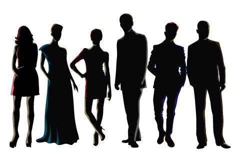

Examples of Altruism in the Wild
Prairie Dogs in the Wild
- Prairie dogs are a good example of general altruism, a prairie dog may whistle if their population is in danger from predators like hawks
to warn the rest of the population to protect the rest of the population but the tradeoff is that the whistler may end up being eaten.
This event will decrease the individual’s direct fitness, but its indirect fitness will increase drastically as the population now continues to thrive.
Ravens in the Wild
- Ravens are another good example altruism, when they come upon a moose or animal they can eat from, the raven will create a call to gather
other ravens to come and eat the animals carcass, this increase the indirect and direct fitness of the organism because the can continue to eat and
help out the population, this is beneficial to all organisms because the animals circus could be too big to just supply a single bird so the group of
birds can get more out of the food than just one individual.
Comparison of Altruism and Eusociality
Can Altruism and Eusociality be Compared
Well while eusociality is a population of multiple organisms to benefit a single leader organism, this can be seen in honeybees as they try to feed the
queen and will risk their lives to save the queen as the queen is the only way for the population to reproduce. In altruism, all organisms can reproduce and
so they have themselves to worry about. As well, both involve selfless actions to be made but in altruism, the individual is more worried about preserving their genes.

Are Humans Altruistic?
Since most humans can reproduce and think for themselves, you could make the point that we are not Eusocial, but what about the taxes and support we give
to our leaders and how everyone always pays taxes and buy items to support the leaders. Our taxes are those we are mandated to pay, and our society needs us
to buy items, it’s almost impossible for us to survive without buying items, because of this I believe humans re not Eusocial but instead Altruistic.
Humans are naturally willing to help others and will help others even if it’s to the detriment of their jobs or niche in society.
You could say that humans are neither because it's our society that forces us to be Altruistic or Eusocial, but humans have been willing to help others
since the beginning of modern humans. In conclusion, humans can be described as Altruistic but not eusocial because of our society and our natural desire
to help others.